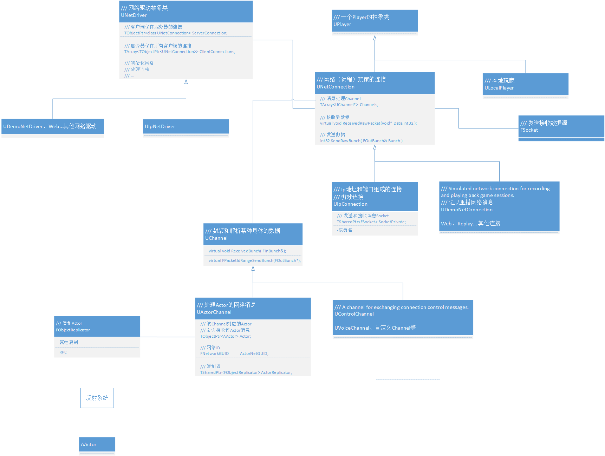
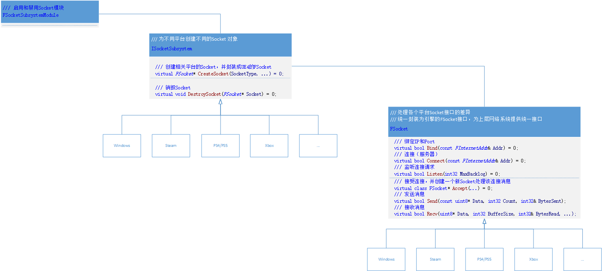

# 一、资料
- UE5 官方文档，略。
- 网络游戏基础
- UE5 源码
# 二、UE5 网络架构 UML 类图

# 二、Socket 系统（FSocket）
- Socket 套接字是端到端通信的接口（API）。Socket API 标准接口：绑定 IP 和端口、连接指定 IP 和端口、接受连接、接收消息、发送消息、获取 IP 等信息...。
- UE5 的 Socket Subsystem 处理底层各个平台 Socket API 的差异，并为上层引擎提供统一的 FSocket 接口。

# 三、网络驱动（UNetDriver）
- 网络驱动功能：
- 处理连接（UNetConnection）
- 控制网络（控制发送接收消息、带宽、大小（拆包和粘包）、断联...）
# 四、连接（UNetConnection）
# 五、通道（UChannel）
# 六、复制器（FObjectReplicator）
# 七、总结
- 发射器：Socket 系统，获取和发送数据源 (bit 流)。
- 控制器：UNetDriver。
- 协议：UNetConnection + Channel + ...，逐层解析和封装游戏上层网络数据！
- 数据：游戏上层网络数据。